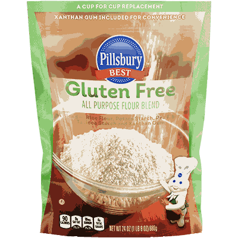

Look, I'm gonna be honest with you. I spent three years hating gluten‑free baking. Everything I made tasted like cardboard, had the texture of sand, or both. I literally threw an entire loaf of gluten‑free bread at my wall once. It bounced. That's not a joke.
Turns out the problem wasn't me. It was the blends.
Most store‑bought gluten‑free flours are garbage for scaling. They're inconsistent from bag to bag. One batch of cupcakes works, the next batch collapses. You scale them up to 50 servings and suddenly everything falls apart.
So I stopped buying blends and started making my own. And once I figured out the ratios, everything clicked. Now I can scale a gluten‑free cake to 200 servings and it works every time. No cardboard. No sand. Just cake.
Let me show you what I learned. But fair warning: there's math. Not scary math. Just ratios. I'll explain it like you're sitting in my kitchen while I bake.
Why gluten‑free is a scaling nightmare Here's the thing about gluten. It's not just some buzzword. Gluten is what gives wheat dough its stretch. It holds bubbles. It traps steam. It makes bread chewy and cakes springy.
Take gluten away, and you lose all of that. Your baked goods become crumbly, dense, and sad.
So you have to build a new structure using other ingredients. That's where blends come in. A good gluten‑free flour blend has three things:
A whole grain flour for flavor and nutrition (brown rice, sorghum, oat)
A starch for tenderness and lift (tapioca, potato, cornstarch)
A binder to hold everything together (xanthan gum, psyllium husk, guar gum)
The problem is that these ingredients behave differently at different scales. A starch that works great at 1 cup might turn gummy at 10 cups. A binder that holds a 6‑inch cake together might turn a 12‑inch cake into a rubber puck.
You can't just multiply everything and hope. You have to understand how each ingredient scales.
The blend ratio that works for almost everything After maybe 200 test batches, I landed on a ratio that I use for 90% of my gluten‑free baking.
100g total flour blend =
40g brown rice flour (or sorghum)
30g tapioca starch
30g potato starch
1/4 teaspoon xanthan gum (per 100g of blend)
That's it. That's my base.
For a typical cake that calls for 240g wheat flour, I use 240g of this blend. Same weight. But here's the catch: gluten‑free flours absorb more liquid. So I add an extra 10-15% milk or water. If the original recipe had 120g milk, I use about 135g.
Why this ratio? Because I stole it from a pastry chef friend and then spent a year tweaking it. The 40/30/30 split gives enough structure from the whole grain, enough tenderness from the starches, and the xanthan gum does the gluten's job of holding bubbles.
The scaling problem nobody talks about Here's where I messed up for years.
At small scale—like one cake—that 1/4 teaspoon xanthan gum per 100g flour works fine. But when I scaled to four cakes, I used 1 teaspoon per 100g flour. That's 4x. The cakes came out gummy. Like, stretchy gummy. Not pleasant.
I finally figured out that xanthan gum doesn't scale linearly. Too much of it turns your cake into a science experiment.
The formula I use now: Xanthan gum for scaled recipe = Original amount × (scaling factor^0.7)
For a 4x scale: 4^0.7 = about 2.6. So instead of 4x the xanthan gum, I use 2.6x.
For a 10x scale: 10^0.7 = about 5. So instead of 10x, I use 5x. Half as much.
Why 0.7? I don't know. I tested exponents from 0.5 to 0.9 and 0.7 gave me the best texture. Some bakers use 0.75. That's fine too. The point is: don't use 1.0.
Liquid adjustments that actually work Gluten‑free flour blends are thirsty. They soak up liquid like a sponge. That's why so many gluten‑free recipes are dry and crumbly—not enough liquid.
My rule: Add 10-15% more liquid than the wheat‑based recipe calls for. But here's the annoying part: different blends need different amounts. My 40/30/30 blend needs about 12% extra. A blend with more starch might need only 8%. A blend with more whole grain might need 15%.
How to figure it out without going insane:
Make the recipe at original scale with your blend. Use exactly the liquid the recipe says.
If the batter is too thick (like cookie dough instead of cake batter), add liquid 1 tablespoon at a time until it looks right. Write down how much you added.
That's your liquid adjustment percentage. Use it for all scales.
For my blend, I add 12%. So for a recipe that calls for 240g milk, I use 269g. Easy.
And here's the good news: The liquid adjustment percentage stays the same when you scale. If 12% works at 1x, it works at 10x. No exponent needed. Just multiply.
Store‑bought blends vs. homemade I know not everyone wants to mix their own flour. I get it. You're busy. You have kids. You just want to bake a damn cake without a chemistry degree.
So here's my honest take on store‑bought blends for scaling.
Good for scaling: King Arthur Measure for Measure, Bob's Red Mill 1‑to‑1, Cup4Cup. These are consistent. They scale reasonably well if you add extra liquid and reduce xanthan gum at large scales.
Bad for scaling: Any blend that has bean flour (like chickpea or fava). Bean flours taste weird at large volumes. Also, cheap store brands change their formula without telling you. You think you're buying the same thing, but it's not, and your cake fails.
My advice: If you're scaling beyond 4x, use a homemade blend. It's cheaper and more reliable. If you're only scaling to 2x or 3x, a good store blend is fine.
The day I ruined 60 cupcakes I feel like I should tell you about a failure so you know I'm not perfect.
Last year, a friend asked me to make gluten‑free cupcakes for her daughter's birthday party. 60 cupcakes. I had a store‑bought blend that had worked for me before. I multiplied everything by 5 (the original recipe made 12 cupcakes).
I forgot to adjust the xanthan gum. I used 5x. The cupcakes rose beautifully in the oven. Then they cooled, and the tops caved in. Every single one. It looked like someone had poked them with a thumb.
I stood there in my kitchen, 60 sad cupcakes staring back at me, and I wanted to cry. But my 6‑year‑old was watching, so I just said "well, that didn't work" and started over.
The second batch I used the 0.7 exponent. 5^0.7 = about 3.1. So I used about 3x xanthan gum instead of 5x. Those cupcakes were perfect.
My kid ate one and said "these are good, mom." That's the only review that matters.
Psyllium husk vs. xanthan gum Xanthan gum is the standard binder for gluten‑free baking. But some people don't like it—it's processed, and it can cause digestive issues for some folks.
Psyllium husk is a natural alternative. It's ground up from plant seeds. It absorbs a ton of water and creates a gel that mimics gluten.
The difference for scaling: Psyllium husk scales more linearly than xanthan gum. You still need to reduce it at large scales, but not as aggressively. I use exponent 0.85 for psyllium instead of 0.7.
Ratio: For 100g flour blend, use 1 teaspoon psyllium husk (instead of 1/4 teaspoon xanthan). Then reduce using the 0.85 exponent at scale.
Downside: Psyllium husk can make your baked goods purple‑gray if you use too much. Also, it smells weird. But it works.
A complete example (because examples help) Let me walk you through scaling a gluten‑free vanilla cake. This is the recipe I use for birthdays.
Original recipe (8 servings, wheat flour):
240g wheat flour (I'll use my 40/30/30 blend instead)
200g sugar
120g butter
120g milk (plus 12% extra = 134g for gluten‑free)
2 eggs
2 tsp baking powder (but we'll adjust because leavening doesn't scale linearly)
1/2 tsp salt
1 tsp vanilla
For gluten‑free at original scale (1x):
240g blend (96g brown rice, 72g tapioca, 72g potato)
1/4 tsp xanthan gum per 100g flour = 0.6 tsp for 240g (I use 1/2 tsp + 1/8 tsp)
134g milk (instead of 120g)
Everything else the same
Now scale to 40 servings (5x).
Scaling factor: 5
What scales linearly (multiply by 5):
Flour blend: 240g × 5 = 1,200g
Sugar: 200g × 5 = 1,000g
Butter: 120g × 5 = 600g
Milk: 134g × 5 = 670g (still +12% from original milk amount)
Eggs: 2 × 5 = 10 eggs
Vanilla: same
What does NOT scale linearly:
Baking powder: 2 tsp × (5^0.75) = 2 × 3.34 = 6.7 tsp (not 10 tsp)
Salt: 1/2 tsp × (5^0.85) = 0.5 × 4.2 = 2.1 tsp (not 2.5 tsp)
Xanthan gum: 0.6 tsp × (5^0.7) = 0.6 × 3.1 = 1.9 tsp (not 3 tsp)
See how that works? You're not just multiplying. You're using the exponents. It takes an extra 30 seconds of math but saves you from a collapsed cake.
The tool that helps I don't do this math by hand anymore. I use the Dietary Restriction Scaling Assistant because I'm lazy and I make mistakes.
A few things I wish someone told me earlier 1. Let gluten‑free batter rest. After you mix, let it sit for 30 minutes before baking. The flours need time to absorb the liquid. If you bake immediately, it'll be gritty.
- Don't overmix. Gluten‑free batter doesn't develop gluten (obviously), but overmixing can break down the starches and make everything gummy. Mix just until combined.
- Store your blend in an airtight container. The starches absorb moisture from the air. If your blend gets humid, it won't work right. I keep mine in a glass jar with a rubber seal.
- Write down what works. I have a notebook where I record every gluten‑free recipe I scale. What blend I used, how much liquid I added, what the texture was like. That notebook has saved me hundreds of times.
- Accept that some things won't work. I've never been able to scale a gluten‑free croissant. I've tried maybe 15 times. It's not happening. That's fine. Bake what works.
The quick reference card (tape it to your fridge) For 100g gluten‑free flour blend:
40g brown rice flour (or sorghum)
30g tapioca starch
30g potato starch
1/4 tsp xanthan gum (reduce at scale using exponent 0.7)
Liquid adjustment: Add 10-15% more than the wheat recipe calls for
Xanthan gum scaling: New = Original × (Scale^0.7)
Store blend shelf life: 3 months in a sealed container
Test before you scale: Always. No exceptions.
I'm not going to pretend gluten‑free baking is easy. It's not. It took me years to get comfortable with it. But once you have a good blend and you understand the math, it becomes second nature.
These days, I actually prefer baking gluten‑free for some things. The cakes are more moist. The cookies are chewier. And my friends with celiac disease can finally eat my food without worrying.
That's worth the extra effort.
— Olivia
P.S. My 6‑year‑old still doesn't know the difference between gluten‑free and regular cake. I gave her both once and asked which she liked better. She picked the gluten‑free one. I didn't tell her. Some victories are private.